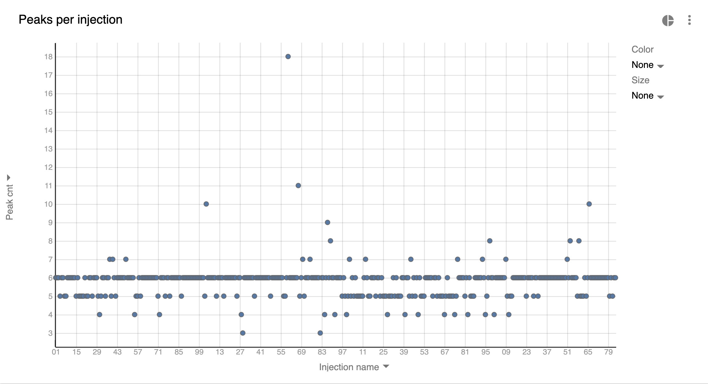
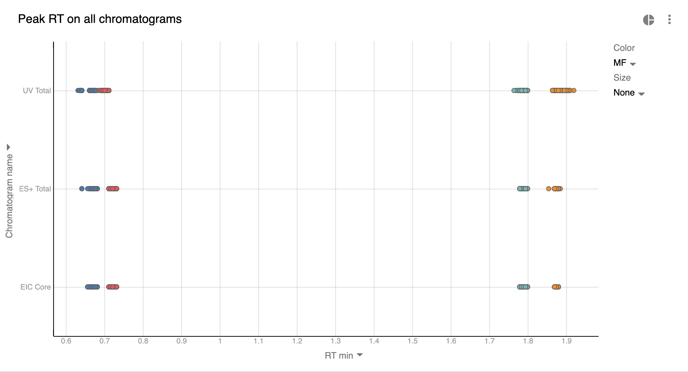
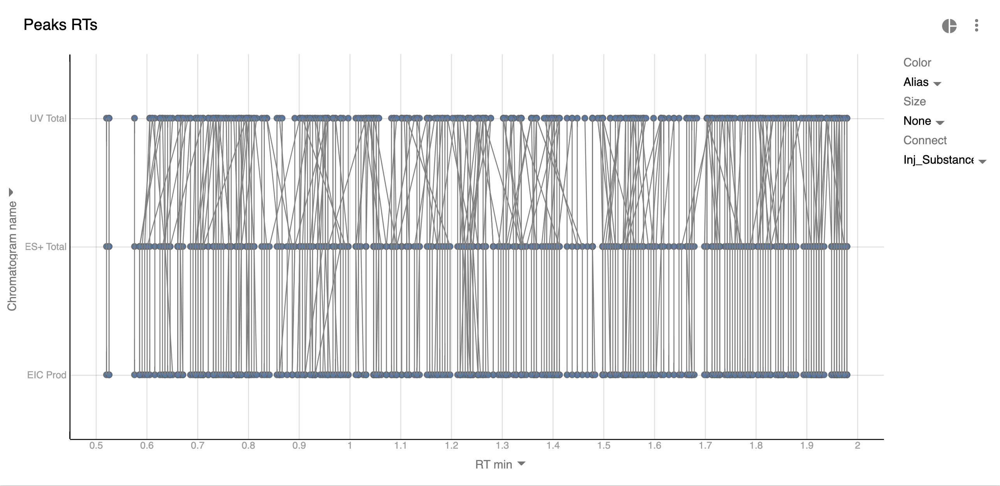
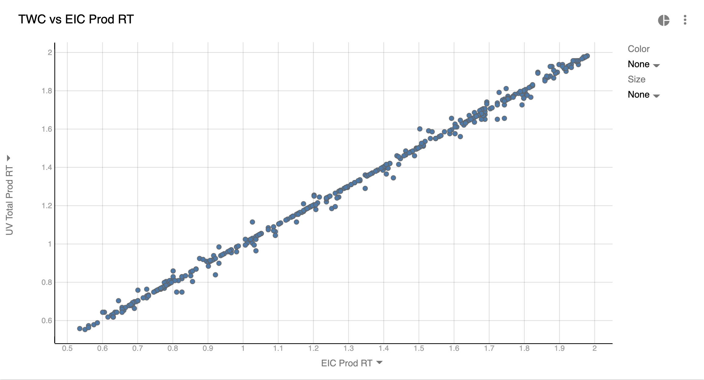
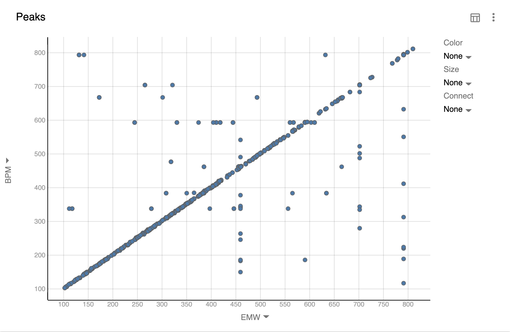

High Throughput Experimentation: speed up analysis with visualizations
High Throughput Experimentation (HTE) is a technique of running reactions at greater counts and smaller scale. In HTE it’s not uncommon to see experiments run in 96, 384-well plates, and some organizations go even higher to 1536-well plates. And while synthesis is getting progressively faster and more robotized allowing to run thousands of reactions per week, analysis becomes the new bottleneck in the cycle.
UHPLC solves some of the problems by reducing the run time of each chromatographic injection to 1-3 minutes. It’s still slow at large numbers (1536 injections take ~50 hours to analyze), but at least the whole process can be relatively autonomous - the instruments can be left running overnight without much human interference.
The slowest manual step ironically happens in the computer. Because modern Peak Detection algorithms aren’t perfect, scientists have to curate the results by going over each chromatogram. Manual inspection is required to check how well peak boundaries were identified, whether there is co-elution and whether chromatograms and peaks from different detectors are aligned. When chromatograms don’t have a lot of high- and low-frequency noise and peaks are well-resolved, this process can be as fast as 30 min per 96 injections (8 hours per 1536 injections). But in challenging cases the whole process can take a week of manual work. And after the analysis is done there’s no guarantee you didn’t accidentally skip some of the injections.
This article demonstrates how batch-level visualizations can greatly simplify and speed up this process. We will use a 384-sized batch of synthesized injections to demonstrate these techniques. Visualizations in this article are built using Peaksel software.
General approach
Ideally we want to review only the data that needs the review and we don’t want to go through all the other injections. For this:
- We’d like the visualizations to point us to the suspicious injections
- Group injections with the same problems
- Apply a change per group instead of changing them individually
- Find exceptions and fix them individually
Now let’s look at the examples of such visualizations.
Peak count
Before looking into the quality of peaks we need to check if the number of peaks is correct. We want to identify how many peaks there are in each injection. In our example there are 2 substances and 3 chromatograms which ideally should result in 6 peaks, but here is what we got:
The majority of injections have 6 peaks, but there are many of those that have greater or less peaks than the expected which could mean:
- Integration Method may need to be changed and the whole batch requires re-integration
- The quality of the signal is low (a lot of noise and/or coelution) which complicates peak detection
- If the number of peaks generally was 6 or fewer than it could simply mean that some of the analytes weren’t present in some injections
- Detector runs are misaligned and therefore peaks are selected on one chromatogram, but they aren’t found on others at respective retention times
- There’s a co-elution, but peaks on Total chromatograms (TIC, TWC) could be associated only with 1 of analytes
To know for sure we need to open problematic injections and look at them. In this particular case changing the Integration Method for the batch solved almost all problems.
Stable Retention Time across batch
In many cases HTE represents condition screening or synthesis of similar compounds. Meaning that the number of distinct analytes is small across the batch. Since same analyte should be eluted at the same time, we can use this to further QC our batch:
Graph set up:
- Basically we depict all our peaks (their Retention Time) from the whole batch on 1 chart.
- The color is the Molecular Formula (MF). So dots of the same color should reside closely together. In the current batch we see that there are only 4 distinct compounds across the whole experiment. If it weren’t the case, we’d use other visualizations (keep reading).
- There are ~384 points on the chart, but they overlay each other so it looks as if the number of points is much smaller.
What can this graph tell us:
- Most of the analytes with the same MF elute closely. But there are some exceptions which have to be inspected.
- Our blue UV Total (TWC) points are slightly shifted to the left. This is likely because of the close elution of other compounds which turned peaks into shoulders. Again, this requires manual inspection.
Peak alignment across chromatograms of single injection
Previous visualization helps well when the number of distinct analytes is low. But what if we synthesized 384 distinct products and we want to QC their peaks? There won’t be several distinct clusters - the points will be all over the chart since Retention Time will be different for all analytes. So how do we check that the peaks are selected at the same RT on different chromatograms?
We will depict all the peaks from the batch, and we’ll connect those points that pertain to the same substance and injection with a line:
Those lines that don’t go strictly from top to bottom mean the peaks are located at wrong Retention Times on some of the chromatograms. They should be reviewed.
But in large batches such visualization becomes too crowded and simpler alternatives should be considered.
Simple way of comparing Retention Time
The most straightforward way of finding issues with peak detection is to compare 2 chromatograms at a time:
You can see where peaks are misaligned between 2 chromatograms. The downside of this approach is that you need to build a chart for almost every chromatogram. E.g. in the case of 5 chromatograms you’ll need 4 charts. But for large batches this may pay off since this type of visualizations is much simpler and cleaner.
Detecting Large Co-elutions
Another potentially useful possibility is detecting if our EIC peak is actually the most abundant mass at that Retention Time. It’s possible that there were other substances as well or our substance degraded or had some unexpected adducts. For this we could compare substance mass (EMW) with the Base Peak Mass (BPM) - the most abundant m/z within the boundaries of the peak.
Here we can see an inclined “line” which is where BPM is the expected substance. Whenever we see points outside of that line is where BPM is something else. We could go even further and filter out points where BPM is the range of EMW ± 2 or some other N where to show only potentially problematic points.
Here is a video tutorial on how to create such a chart.
Summary
When running High Throughput Analysis the amount of data that’s generated is too large to look at manually. But with the use of specialized software like Peaksel this whole process is hugely simplified. The abilities that such software needs to possess are:
- Point scientists to the data that need attention. This can be achieved by building all sorts of visualizations and statistics
- Allow to fix the problems and apply changes globally instead of fixing them one-by-one
- Have a notion of templates so that all of the visualizations and calculations are done automatically with 1 click
But in the end it’s important to understand that the quality of chromatograms is the biggest factor that will impact how quickly you process the data. If all chromatograms and peaks have poor shape and low signal-to-noise ratio, then most if not all of the injections will have to be inspected anyway.